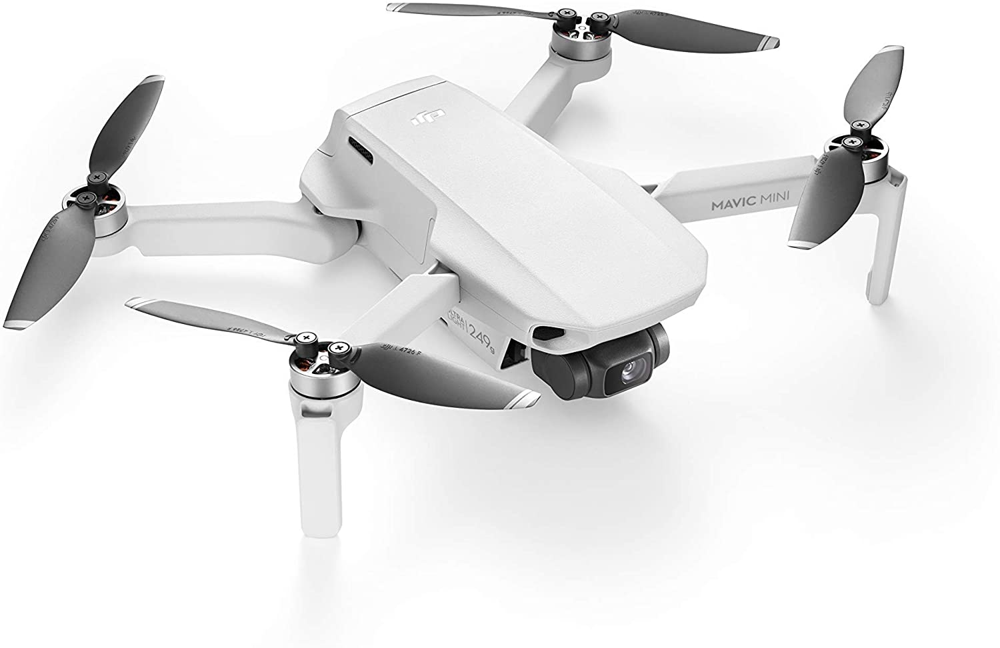

Koji operativni sustav je potreban? iOS v10.0 ili noviji. Android v6.0 ili noviji.
Mavic Mini teži manje od 250 grama, što je gotovo jednako lagano kao i običan pametni telefon. Težina Mavic Mini -a omogućuje mu da ostane u zraku dulje od sličnih potrošačkih FlyCamsa na tržištu.
Potpuno napunjena baterija može uživati do 30 minuta leta.
Mavic Mini podržava fotografije iz zraka od 12MP i 2.7K quad HD video zapise.
Električno pomicanje/naginjanje s tri osi pruža izvrsnu stabilnost fotoaparata, osiguravajući jasno i ultra glatko snimanje.
Sta je u kutiji? DJI Mavic Mini, daljinski upravljač, inteligentna letna baterija, par rezervnih propelera, mikro USB kabel, štitnik za gimbal, RC kabel (mikro USB konektor), RC kabel (USB-C konektor), RC kabel (Lightning priključak) , Par rezervnih upravljačkih palica, 6x rezervni vijak, odvijač
Koristeći QuickShot Mavic Mini način rada (uključujući Droni, Circle, Helix i Rocket), možete vidjeti snimke koje izgledaju kao da su iz holivudskog filma postavljene sa samo nekoliko dodira. Samo odaberite svoj QuickShot i Mavic Mini će tijekom snimanja izvoditi složene unaprijed definirane radnje.
Ovaj televizor trenutno košta
950.99Kn
Kupi Odma!